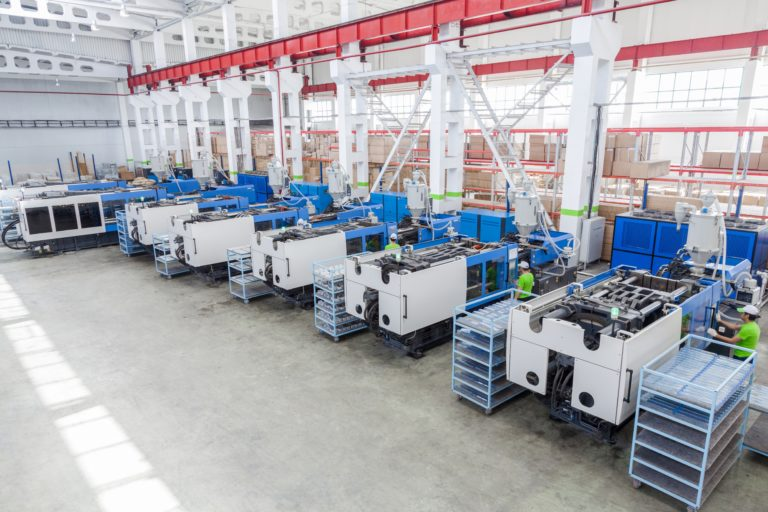

Hydrocarbons are then extracted from the oil and refined into ethylene and propylene. These molecules then form into chains and are processed into plastics. Additional chemicals are added to change the properties of the plastic so it can effectively be a bag. This process consumes a large amount of energy is used and greenhouse gases are emitted